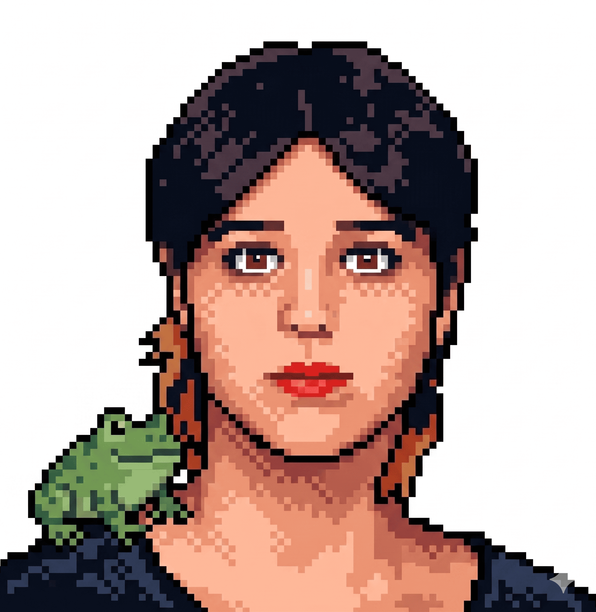
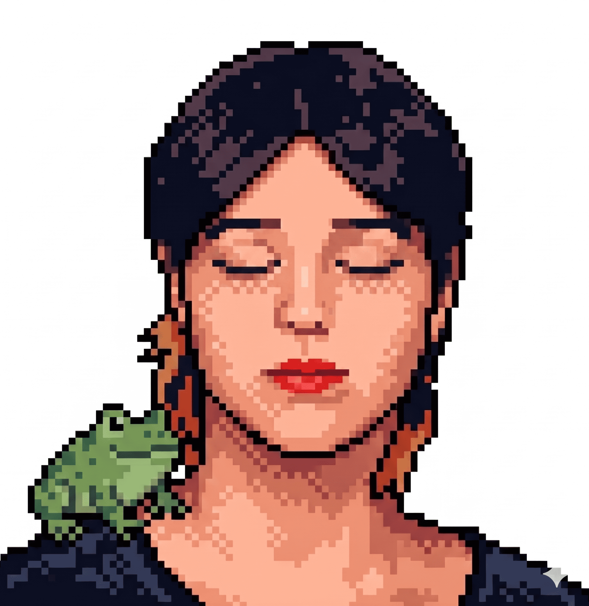

Spatial Storytelling
I view architecture not just as building, but as a way of reading space through light, slope, and movement. My approach is rooted in understanding the relationship between the human body and form.
ARCHITECTURAL STUDIES, SHEETS & DIGITAL EXPERIMENTS- ABOUT
Hello, I’m Şevval. I am a second-year architecture student at MSGSÜ, currently exploring the intersections of space, narrative, and digital archives.
My work focuses on the dialogue between terrain and section, the poetic reading of atmospheres, and the precision of physical models. I see architectural design as a form of visual storytelling—a way to archive spatial experiences and topographic observations.
Beyond the studio, you'll find me documenting the streets through my lens or building digital spaces like this one.


I view architecture not just as building, but as a way of reading space through light, slope, and movement. My approach is rooted in understanding the relationship between the human body and form.
My work is fueled by architectural photography and archaeological curiosity. I explore topographic observations, sectional logic, and the poetic narrative of textures.
This website is a snapshot of my journey as a student. It is designed as a living, breathing archive to document my progress and spatial thoughts as they evolve.